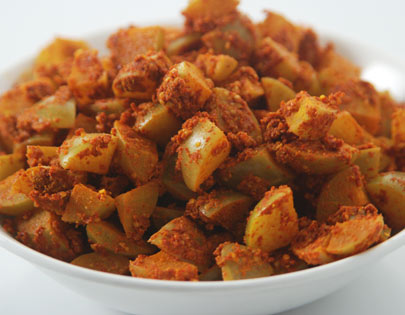

Ingredients:
1)1/2 kg Amla
2)125 gms Green Chillies (slit )
3)125 gms Oil
4)50 gms Salt
5)1/2 tsp Jeera
6)1/2 tsp Mustard seeds
7)2 tblsp roasted & powdered Sesame seeds
8)1 small Lemon
How to make amla achar :
1)Wash and dry amla and keep aside.
2)Heat oil in a pan and fry green chillies for 2 minutes.
3)Remove the chillies from the pan Add jeera and mustard seeds.
4)Then add Aamla and fry for few minutes.
5)Sprinkle some water and cover the pan with a lid and let it stay for 6 minutes.
6)Turn the flame to medium and stir regularly.